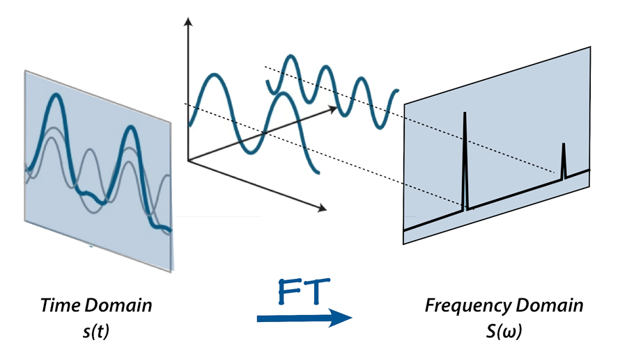

Final SoftDes Project
Put simply, Fourier Transforms convert a signal from the time domain to the frequency domain. Every piece of audio can be represented as amplitudes (volumes) at each moment in time. Because audio signals are composed of multiple sound waves mingling with each other, the frequencies of the waves at each moment in time can be represented in the frequency domain. A Fast Fourier Transform (FFT) is an algorithm that computes the discrete Fourier Transform of an audio signal. In SpectrumAnalysis, the frequencies are grouped into buckets for visualization.
See the Wikipedia pages on FFT and Fourier Transform for more information.